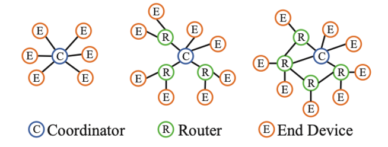
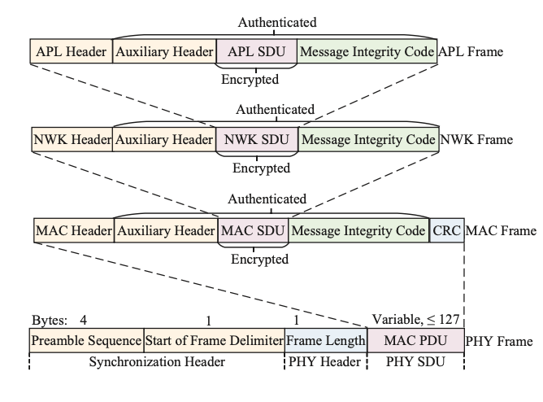
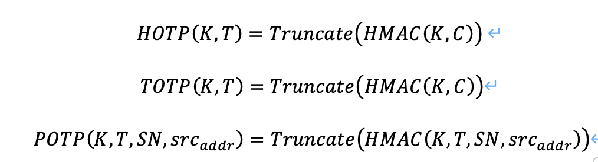
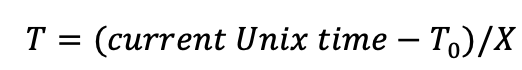
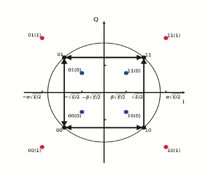
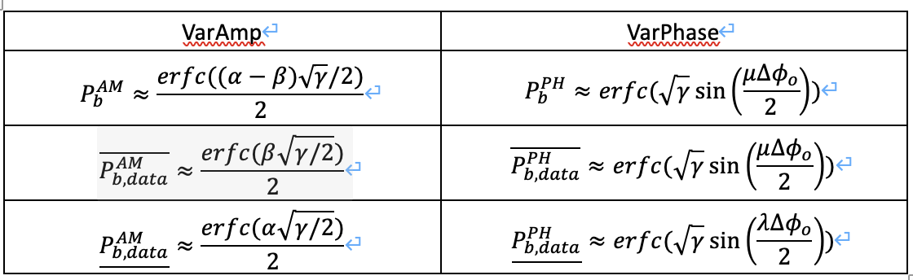
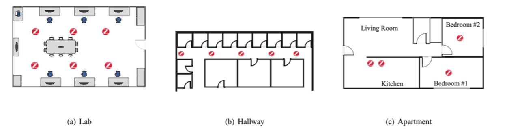
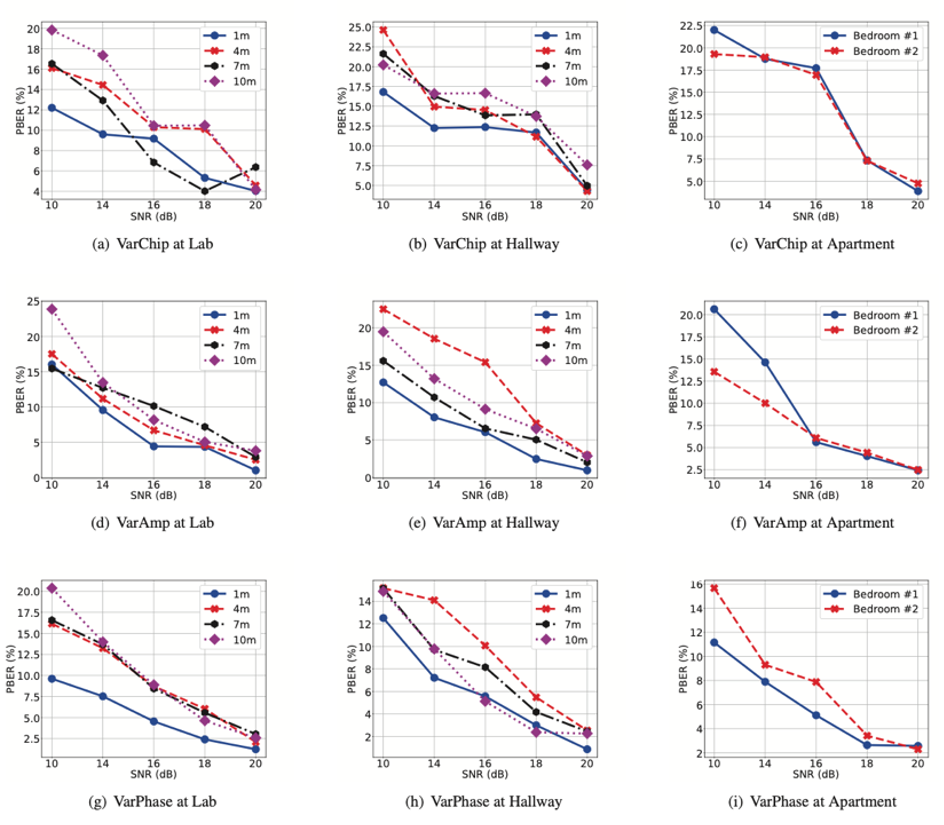
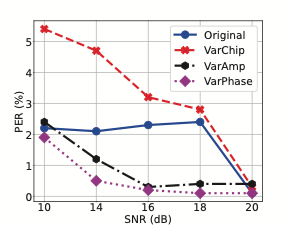
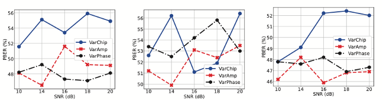

一、研究背景
1、ZigBee介绍
ZigBee是一种近距离、低复杂度、低功耗、低数据速率、低成本低双向无线通信技术，在物联网（IOT）中广泛使用。Zigbee的协议栈有4层，自低向上依次为物理层（PHY），媒体访问控制层（MAC）、网络层（NWK）、应用层（APL），其中APL又包括应用支持子层（APS）和ZigBee的设备对象（ZDO）。
ZigBee网络中包括三种类型的设备，协调器、路由器、终端。协调器负责启动网络和维护网络，路由节点负责转发数据包，而终端则负责发送和接受数据。一般，一个ZigBee网络中通常包含一个协调器和若干路由器以及终端。

图1-1 ZigBee网络的拓扑图
在ZigBee中，数据包可以单点传送、多点传送或者广播传送，所以必须有地址模式参数。一个单点传送数据包只发送给一个设备，多点传送数据包则要传送给一组设备，广播数据包则要发送给整个网络的所有节点。目前ZigBee广泛应用于IOT的设备中，比如医疗设备的自动化控制、工厂的自动化设施、智能家居等。
2、ZigBee中的安全措施
ZigBee在NWK和APL层之间定义了一种安全措施，该种安全措施中使用到了“link”key和“network”key。通常，在APL层对等实体之间的单播帧中使用128-bit的link key，而在广播/多播以及所有的NWK层帧中则使用network key。
如图1-2所示，在ZigBee的帧中，存在一个信息完整性码（MIC），每一个NWK帧都使用基于network key和128-bit AES-CCM算法的MIC进行加密以及认证。而对于APS帧，则能够根据帧的类型以及应用程序的需要而使用network key或link key。ZigBee让每个节点使用network key进行NWK MIC的验证，从而实现逐跳消息身份认证，相比之下，APS的MIC仅在端到端目的地的APS实体处进行验证。

图1-2 ZigBee中的安全措施
3、ZigBee中的安全隐患
ZigBee的安全措施并不是完美的，也存在一些安全隐患。比如基于共同network key的逐跳身份认证机制，就会很容易遭受分组注入攻击。在ZigBee的安全架构中，如果一个设备在转发的每个NWK帧中附带一个真实的MIC，那么它的邻居就会认为它拥有正确的network key，并认为改设备是合法的。因此，攻击者可以先嗅探那些合法的设备或者一些随机地址的设备，来获取有效的MIC，再和伪造的内容组合一起注入到NWK帧中，从而实现攻击。
NWK帧可以被分为控制帧和数据帧，控制帧用于路由和网络的管理，数据帧携带APS层的数据信息。而NWK中包含APS层广播数据的控制帧和数据帧都仅使用network key进行身份认证，因此攻击者构建的虚假的分组可以以这些类型的帧作为攻击目标，从而导致错误的数据包被广泛的传播，对整个网络带来严重的破坏。即使一些携带APS层单播数据的NWK帧只能被基于端到端的link key的APS MIC来进行身份认证，攻击者伪造的数据包也能在目的地被检测出来存在问题，从而会耗费网络系统的资源，造成一定的影响。
二、方法介绍
1、PhyAuth介绍
考虑到ZigBee目前的安全问题是由于其身份认证依赖的密钥较为单一，很容易被截获进而伪造分组，因此在论文中，提出了一种新的身份认证的方法—PhyAuth。PhyAuth的核心思想是让每一个ZigBee发射设备使用它自己专用的密钥派生出一个PHY一次密码（POTP），再将其嵌入到PHY信号中。这样以来，验证设备可以通过ZigBee发射设备的PHY信号来获取POTP进行验证，这些验证设备可以是正常的ZigBee网络中的接受者或者是IDS系统。如果验证者发现了一个无效的POTP，那么它可以直接丢弃该NWK帧，从而避免错误帧的进一步传播；此外，验证者也可以向ZigBee网络的管理员发送警告信息，报告异常情况，这样管理员就可以快速的定位有问题的设备并进行处理。POTP的生成可以使用软件或硬件来运行任何标准的hash函数。
2、PhyAuth的优点
PhyAuth具有一些优秀的特性，可以对分组注入攻击进行有效的防御。
（1）由于POTP使用的是设备专用的密钥，因此每个设备的的POTP是唯一的，攻击者只能使用通信中协商过的指定设备来注入分组，而不能像以前一样随意的选择设备进行注入。即使攻击者进行了攻击，管理员也可以很快的定位到有问题设备，从而防止伪造分组的传播。
（2）PhyAuth并没有修改ZigBee的NWK/APL/MAC层，而只是在PHY层进行一些额外的处理，因此PhyAuth具有更好的兼容性，只要支持ZigBee的标准协议，基本都能使用PhyAuth。
（3）PhyAuth并没有涉及到硬件的修改，它可以作为对PHY层进行处理的一个固件，并不断的进行更新。
（4）PhyAuth对于系统性能的消耗是可以忽略不记的。此外对于那些没有添加PhyAuth的设备，它们收到包含POTP的数据包也会像往常一样处理，而不会出现错误。
（5）PhyAuth对于伪造以及重复的POTP具有弹性。
（6）PhyAuth使用标准的散列函数进行计算，它的计算效率较高。
3、PhyAuth的实现
（1）PhyAuth的工作流程
PhyAuth可以分为两个步骤：1）发送步骤，每一个进行包转发的合法的ZigBee发送设备，必须将POTP嵌入到PHY信号当中；2）接收步骤，每个ZigBee的接收设备都会充当验证者，从分组的PHY信号中提取并验证POTP，只有合法的POTP才会进行放行。
（2）POTP的生成和验证
POTP是授权ZigBee设备进行传输数据包的加密和不可伪造的二进制序列。
1）POTP的生成
POTP使用标准的ZigBee安全密钥，并通过结合HOTP算法和TOTP算法来构建POTP，这两种算法分别由RFC 4226和RFC 6238定义。HOTP和TOTP广泛的运用于双重身份认证系统，二者都使用一个密钥（定义为K），且该密钥K只被HOTP/TOTP生成器以及验证器所知道。
定义C为一个8字节的计数器，T为时间因子，Truncate为将HMAC值转换为HOTP/TOTP的函数，SN为802.15.4定义的MAC帧头部8位单调递增的序列号，则POTP的生成过程可以用以下公式表示：

在公式中，POTP的生成用到了三元组(T,SN,src_addr)，使得POTP的生成不仅会收到设备的影响，还会收到时间的影响，从而加强了HOTP的设备依赖性以及时间依赖性。HMAC可以使用任意标准的密码算法，例如AES-MMO、SHA-2等。
2）POTP的长度
为了能够有效的抵抗攻击，HOTP/TOTP的长度至少位31bit，所以POTP的长度也应该至少是这个大小，例如32/64/128位的长度。POTP的长度越大，对于攻击的抵抗力越强，但相关的开销也会越大。
3）时间步长的大小
时间因子T是一个整数，用于表示相对于初始Unix time—T0的步长。另X代表以秒为单位的时间步长，而T0是Unix time开始计数时的步长。X和T0都是系统参数并且必须安全传输给每一个ZigBee设备以及POTP验证者。则T的计算公式如下：

4）密钥K的选择
对于K，有三种选择。第一，K可以取自于ZigBee中共用的network key，这种方式虽然简单，但也给攻击者方便。第二，可以使用发送设备不同的信任中心（Trust Center）的link key来作为K，显然这种方式的安全行更高。第三，将K设置为发送设备和其邻居之间应用程序所共享的link key。
对于第三种方式，假设一个发送设备为i，它的邻居为j，发送设备和所有邻居共享的密钥为ki，而和每一个邻居j单独使用的密钥为ki,j。发送设备使用ki来生成POTP，而其邻居可以使用ki,j来从分组中获取POTP从而进行验证。可见，这种方式的密钥选择，更加的安全。
5）POTP的验证
另δ为两个ZigBee设备之间时间步长X归一化后可能的时钟偏移，Tc为当前时时间步长值。每一个POTP的验证者从PHY信号中取出POTP之后，对于T∈[Tc - δ, Tc + δ]，进行有效性的验证。首先检查MAC帧的序列号是否是在时间步长窗口T中所遇到的最大值，然后使用广播/单播中应用程序的key来获取发送设备的K，在用K去获取POTP 并检查它和之前获得的其他POTP是否相等。如果任何一个步骤出错，那么该POTP被认为是无效的；如果两个设备都出错了，则该POTP的发送设备被认为是非法的，验证者将会向管理员发出警告。
3、POTP的编码和解码
（1）POTP编码
PhyAuth包含三种编码方案—VarChip、VarAmp以及VarPhase，对ZigBee PHY帧的不同特征进行分析来嵌入POTP。ZigBee使用IEEE 802.15.4 PHY层，该层探索直接序列扩频（DSSS）来提高对干扰和噪音的抗性； MAC层中每4bit的ZigBee符号都会分布到发射器上预定义的伪随机噪声序列（PN），VarChip方法中，用POTP来替换PN中的一些位置；此外ZigBee采用OQPSK来调制DSSS生成的PN序列，VarAmp方法通过增强或减弱OQPSK符号的振幅来嵌入POTP。最后，VarPhase方法则是通过预定义的参数来控制连续OQPSK信号之间的相位偏移来嵌入POTP。这三种方式都可以独立或联合在一起使用。
（2）POTP解码
VarChip：作为发送设备的一跳邻居，验证者从可能的嵌入位置提取POTP的序列，作为候选POTP进行验证。
VarAmp：验证者通过VarAmp的散列图来提取POTP。通过检查图中接收到的数据符号以及POTP散列点之间的距离来解码POTP。验证者将会确定最接近的每个接收符号的POTP散列点，然后将嵌入的POTP位解码为1或0.

图2-1 VarAmp方案中POTP的散列图
VarPhase：验证者通过检查接收到的连续复数之间的相移来解码POTP。如果相移比经验阈值大（小），则将嵌入的POTP位解码为1（或0）。
三、效果描述
1、POTP解码性能
论文中首先对POTP的bit错误率（BER）进行分析。为了便于分析，假设信道具有平均零和功率谱密度（PSD）N0/2的辅助白高斯噪声（AWGN）。
在分析的过程中，以原始OQPSK的BER作为参照对象。原始OQSPSK的BER值为 ，根据VarChip的编码程序，其获得的POTP的BER与原始OQPSK是相等的，此外VarChip的data BER也等于该值。因此，论文中仅展示VarAmp和VarPhase的POTP和data 的BER值，如表3-1所示：
表3-1 POTP解码性能的分析结果

2、通信/计算的开销和能耗
除了建立应用程序link key的一次性分组外，PhyAuth不会引入额外的ZigBee流量，因此通信开销可以忽略不计。而计算的开销和能耗主要是由HMAC生成POTP的操作决定的，经过实验证明，对于流行的SimpleLink CC13x2/CC26x2 ZigBee设备中，使用128位密钥的AES-CCM和SHA-224能耗良好，耗时均小于0.05毫秒；而如果使用Arm Cortex-M4F软件进行AES-CCM和SHA-224操作，耗时均小于0.5毫米。无论是硬件还是软件，两种加密操作的平均电流均在3～4mA之间。与ZigBee原本的MIC验证方式进行比较，使用硬件的POTP能耗是其1.1倍，而使用软件的POTP能耗确实其0.8倍。由此可以判断，使用POTP带来的计算延迟和能耗与原本的MIC方式基本一样。但是，PhyAuth能够阻止虚假数据包的多跳传输，从而节省大量能耗，这也是其优点。
3、安全性分析
首先对于external attacker，其并不知道目标ZigBee网络身份认证所用的network key。当PhyAuth没有配置时，显然攻击者并不能发送一个包含正确MIC的分组，因此不能通过逐跳的身份认证。而当PhyAuth配置后，攻击者必须要向PHT信号中嵌入伪造的POTP才能实现攻击。但只要POTP足够长，攻击者就几乎不能伪造POTP，假设POTP长度为L，则攻击者伪造的随机POTP正确率为1/2L，在L >= 32的情况下，显然伪造成功的概率几乎为0。此外POTP的验证效率比原本的MIC验证更高，因此PhyAuth更有优势。
其次，考虑internal attacker，该攻击者已经突破了一个设备，假设为A，并获得了network key。当PhyAuth没有配置时，攻击者可以用获得的network key，发送伪造的分组。由于该分组是包含正确的MIC的，它可以顺利的经过逐跳身份认证并到达目的地。而当PhyAuth配置后，如果攻击者使用随机地址的设备（假设为B）发送分组，要想攻击成功，就必须在每一个伪造分组中加入正确的POTP，而这个成功概率仅为1/2L，几乎不可能成功，而这些伪造的分组会被B周围的邻居很快的识别出来；如果攻击者使用他已经入侵过的A发送分组，虽然能够携带正确POTP，即能够成功的经过身份认证，但由于攻击者固定了发送设备A，他便很容易被管理员识别出来。
此外，对于重复分组攻击，PhyAuth也同样具有较强的抵抗性。每一个POTP的产生依赖于发送设备的MAC地址，MAC帧序列号和时间因子。另外，生成POTP的link key是发送设备和它的一跳邻居所共享的，因此每一个POTP只能被用与发送设备和邻居之间。这些导致了攻击者不能重复利用同一个嗅探到POTP分组进行攻击。
综上可知，PhyAuth具有较强的安全性。
4、性能评估
论文中使用USRP实验，在不同的背景下对PhyAuth的三种方法进行性能评估。
（1）实验开始准备
使用三个USRP设备作为硬件平台，通过修改IEE 802.15.4 PHY的开源代码，在GNU Radio上实现三个PhyAuth的方案（VarChip，VarAmp和VarPhase）。此外，在评估中使用三种具有代表性的物理环境，即实验室、走廊和公寓，如图3-1所示。

图3-1 三种代表性的物理环境
（2）性能指标
论文中使用四个指标来评估性能：POTP比特的错误率—PBER、分组错误率PER、假阴率—FNR、假阳率—FPR。PBER用来评估三种方案中从接收的数据包解码POTP的性能；BER用来评估三种方案对正常接收/发生数据包的影响；FNR和FPR用来评估三种方案区分合法和伪造分组的能力。
（3）评估过程及结果
在实验中，让ZigBee发送设备发送5000个数据包，其中的PHY信号中嵌入POTP。图3-2为三个方案的PBER性能，可以观察到，随着信噪比的从10分贝增加到20分贝，三种方案的PBER曲线都会减少，并且图中的四个曲线均彼此接近，可以得出距离对三种方案的影响忽略不计的结论。与VarChip和VarAmp相比，VarPhase方案具有较低的PBER，当信噪比大于16分贝时，所有场景中VarPhase的PBER都低于10%，而当信噪比大于18分贝时三种方案的PBER都低于10%。这些结果均表明，三种方案都可以有效的提取和解码POTP，而VarPhase方案更加的优秀。

图3-2 PBER的分析结果
图3-3展示了三种方案中接收者的PER，由于VarAmp和VarPhase都可以降低BER，因此它们具有较低的PER值。另外，VarChip在低SNR低例子中可以提高PER，原因可能是VarChip使用POTP序列替换了一些PN序列中的位置，从而提高了分组的chip-error。但是当SNR超过18分贝时，VarChip对PER几乎没有负面影响。

图3-3 PER的分析结果
对与三种方案的平均FNR，在实验中设置了一个阈值来确定解码的POTP是否有效。具体来说，如果解码的POTP BER值低于预定义的阈值，就可以认为接收的数据包是合法的，否则是假的。在三种方案中，将阈值设置为25%，可以看到，评价FNR随着SNR的增加而减少。而当信噪比高于14分贝时，三种方案的FNR都能低于1%，这些结果表明，三种方案可以有效的从合法数据包中提取和验证POTP。
论文中还用实验评估了三个方案的攻击弹性。使用一个USRP B210作为攻击者，并在没有任何POTP的情况下传输5000个数据包、使用假POTP和重传的有效POTP。而验证者则遵循PhyAuth协议，并从每个接收到的数据包中检测和解码POTP，计算出的PBER如图3-4所示（从左到右，依次为没有POTP的分组，伪造POTP的分组，重传的POTP的分组）。可以看到，所有攻击方案中从虚假分组中提取和解码的POTP的平均PBER高于45%，此外用相同的FNR设置来评估三个方案的FPR，得到三个方案的平均FPR低于0.01%的结果。种种迹象表明，三种方案对于伪造分组的检测具有很高的效果。

图3-4 伪造分组中提取和解码的POTP的结果
综上，三个方案在各种SNR环境中的性能略有不同，但总体上差不多。实际中，可以将三种方案进行任意的组合，从而提高POTP的容错性。
四、评价与思考
从论文所研究的内容来看。ZigBee作为IOT中重要的协议栈，其目前安全架构的不足，的确会带来巨大的安全隐患，使得非法分子可以对一些重要的设备进行攻击，从而破坏整个ZigBee网络。而物联网作为实现设备自动化操作的重要技术，ZigBee的安全隐患的确会带来不小的威胁，小至家庭中的一些智能家居，大至国家机密工厂的自动化加工。而论文正是针对ZigBee的身份认证安全问题，进行分析，从ZigBee的协议栈入手，找到一种合适的方式能够加强ZigBee的身份认证，使得既不会影响ZigBee的性能，又不失安全性，可谓两全其美。论文的最后，对于PhyAuth的性能分析，也毫无疑问证明了这种身份认证方法的优越性。此外，论文也充分分析了PhyAuth在各种场景下的发挥效果，以及PhyAuth的移植性问题，确保PhyAuth能够更加广泛的应用于各种ZigBee设备中。我认为，随着智能化的发展，物联网在未来必有巨大的发展潜能，PhyAuth对于ZigBee身份认证的加强，为物联网中安全问题做出了重大的贡献。
从论文中的研究过程来看，该篇论文也给了我一些思考。首先，如果要研究一个安全类的课题，要先选定目标，然后对目标涉及到的理论知识进行分析，比如研究ZigBee的身份认证之前，需要了解ZigBee协议栈道基本工作原理和身份认证的原理。其次，就需要对目标原有的安全架构进行分析，分析它有哪些安全隐患，并给出有力的证明，这样才更有说服性，并证明课题研究的必要性。而对于目标安全架构的研究，需要考虑的方面也有很多，不仅要考虑对原本安全性的提升，也要考虑对目标一些其他功能是否有影响，比如资源消耗问题等。在本文中就针对ZigBee设备数据包发送的能耗以及速率、数据包的错误率等进行了分析，全面的探讨了PhyAuth是否会对ZigBee设备原有性能造成影响，以及影响多少。最后，课题研究也应该注意提出的方法的移植性、适应性问题，比如在多个系统、设备上能否正常使用，在不同环境下是否正常的工作，这个是导致研究的方法最后是否实用的必要条件。
此外，对于身份认证这一技术也给了我一些启发，如果要研发一种身份认证的算法，可以针对密钥的选取，加密算法的使用等方面进行入手。考虑到现有的加密算法比较成熟，且新的加密算法的提出也不太容易，因此可以注重研究身份认证过程中使用到的密钥等参数信息，比如本文就结合ZigBee中的一些密钥以及时间、设备MAC地址等参数作为输入，用已有的加密算法进行计算，最终获得POTP。